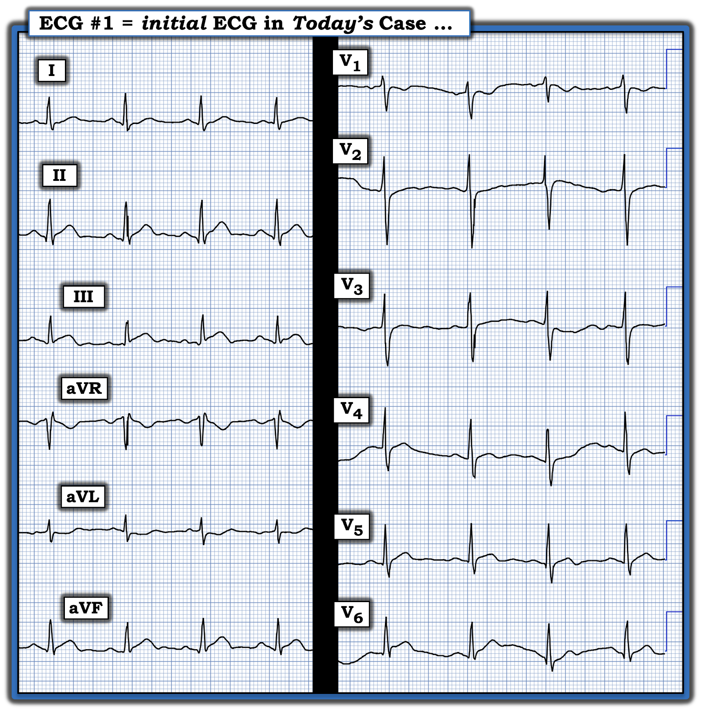
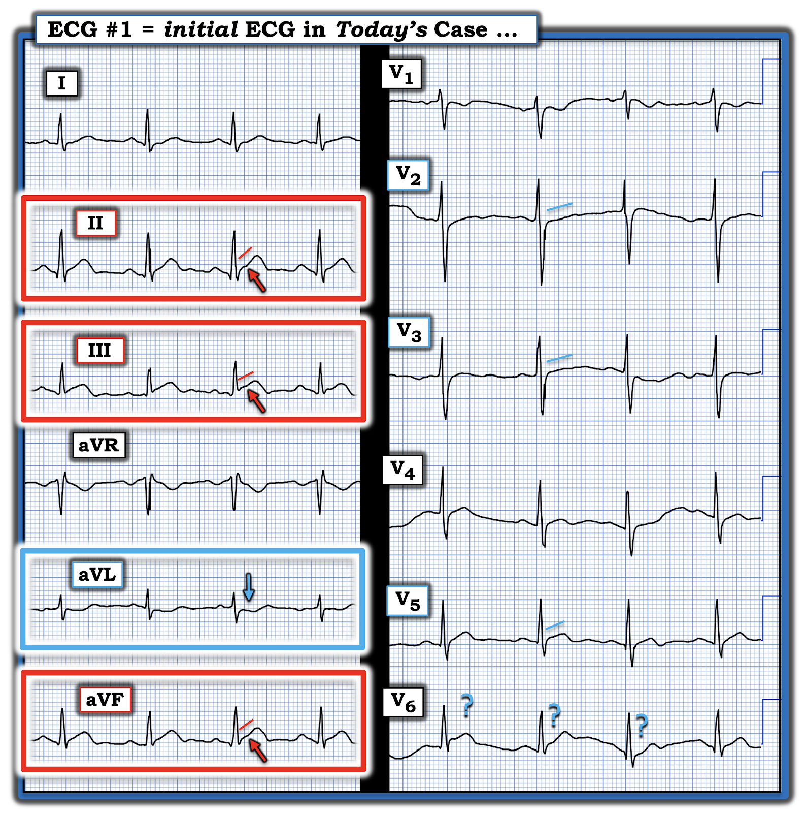
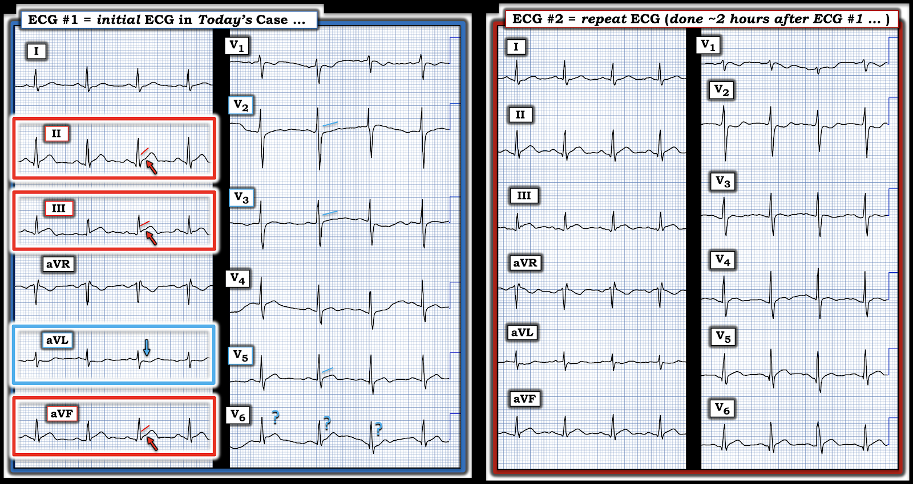
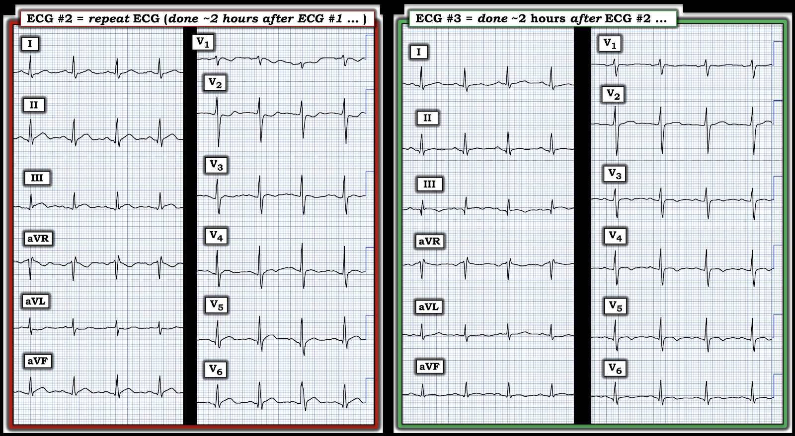
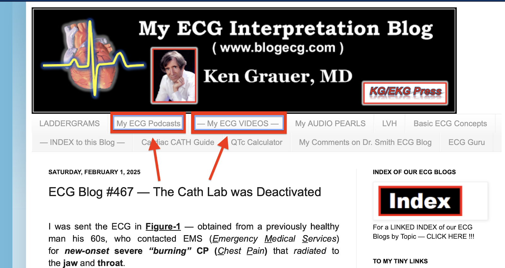

ECG Blog #469 — Đau thượng vị trong bữa tối
Điện tâm đồ ở Hình-1 được ghi từ một phụ nữ trung niên — đến khoa cấp cứu (ED — Emergency Department) vì đau thượng vị khởi phát ~1 giờ trước đó.
- Cơn đau thượng vị bắt đầu trong bữa tối. Tại khoa cấp cứu, bà được chẩn đoán là viêm dạ dày.
- Troponin lần 1 không tăng.
CÂU HỎI:
- Bạn diễn giải điện tâm đồ ban đầu ở Hình-1 như thế nào?
- Troponin ban đầu âm tính có loại trừ được một biến cố cấp không?


TRẢ LỜI:
- Một giá trị Troponin ban đầu âm tính không loại trừ được biến cố tim cấp. Điều này đúng ngay cả khi dùng xét nghiệm Troponin "hs" ( = độ nhạy cao — high sensitivity).
- Những trường hợp mà giá trị Troponin ban đầu có thể âm tính dù đang có nhồi máu cấp, tiến triển — bao gồm KHI thời gian tắc động mạch vành ngắn (tức là, vì đã có tái tưới máu tự phát của động mạch "thủ phạm").
- Điện tâm đồ ở Hình-1 không bình thường. Thay vì viêm dạ dày — điện tâm đồ ban đầu này gợi ý một nhồi máu cơ tim do tắc (OMI) cấp (Occlusion-based MI) đang diễn ra.
CÂU HỎI:
- Bạn có nhận ra tất cả các dấu hiệu được đánh dấu ở Hình-2 không?


Diễn giải của tôi về điện tâm đồ ở Hình-2:
Nhịp ở Hình-2 là nhịp xoang, có lẽ kèm chút loạn nhịp xoang do khoảng R-R thay đổi ở các chuyển đạo trước tim. Các khoảng (PR, QRS, QTc) và trục mặt phẳng trán bình thường. Không có lớn buồng tim.
Về Thay đổi Q-R-S-T:
- Sóng Q — Sóng Q hẹp chưa rõ ý nghĩa thấy ở mỗi chuyển đạo thành dưới. Sóng q rất nhỏ (có lẽ là sóng q vách) thấy ở các chuyển đạo trước tim bên V5,V6.
- Tăng tiến sóng R — cho thấy biên độ sóng R tăng hơi đột ngột, sớm giữa chuyển đạo V1-đến-V2 — mặc dù vùng chuyển tiếp (nơi sóng R trở nên cao hơn độ sâu của sóng S) xảy ra bình thường giữa chuyển đạo V3-đến-V4.
Đánh giá hình dạng ST-sóng T:
- Xét bệnh sử đau thượng vị mới xuất hiện (đôi khi có thể là một triệu chứng tương đương đau ngực) — “mắt” tôi lập tức bị hút về 3 chuyển đạo thành dưới (trong các hình chữ nhật ĐỎ ở Hình-2).
- Mỗi chuyển đạo thành dưới cho thấy điểm J ST chênh lên nhẹ-nhưng-thật — kèm thẳng đuỗn đoạn khởi đầu ST — và — đáy sóng T rộng-hơn-mong-đợi. Ở bệnh nhân có triệu chứng mới này — các thay đổi ST-T này mang dáng vẻ của ST-T tối cấp.
- Bằng chứng mạnh mẽ rằng các thay đổi ở chuyển đạo thành dưới này là “thật” và chỉ điểm OMI thành dưới — đến từ ST-T chênh xuống soi gương ở chuyển đạo aVL, với phần cuối sóng T hai pha (mũi tên XANH trong hình chữ nhật XANH ở Hình-2).
Điểm MẤU CHỐT: Vì OMI thành dưới rất thường đi kèm tổn thương vùng sau — cần đặc biệt chú ý tới các chuyển đạo V2,V3,V4, tìm ST chênh xuống bất thường.
- Bình thường — phải có ST chênh lên nhẹ, dốc lên thoai thoải ở chuyển đạo V2 và V3. Điều này không có ở chuyển đạo V2 và V3 trong Hình-2 — nơi ST chênh lên dốc lên bình thường này đã bị thay bằng đoạn ST dẹt (kèm gợi ý điểm J chênh xuống ở chuyển đạo V2).
- Chuyển đạo V4 đóng vai trò chuyển đạo "chuyển tiếp" — cho thấy ST-T dẹt không đặc hiệu. Tiếp theo ở chuyển đạo V5 là đoạn ST thẳng đuỗn, kèm gợi ý ST chênh lên và gợi ý phần cuối sóng T đảo ngược.
- Có quá nhiều nhiễu ở chuyển đạo V6 nên khó nhận định được nhiều.
Nhận định điện tâm đồ #1:
Tôi diễn giải điện tâm đồ ban đầu này ở Hình-2 là rất gợi ý OMI dưới-sau-bên cấp cho đến khi chứng minh được điều ngược lại.
- Nếu người điều trị còn bất kỳ nghi ngờ nào về chẩn đoán — nên ghi lại điện tâm đồ trong vòng 15-đến-20 phút (hoặc thậm chí sớm hơn nếu mức độ triệu chứng thay đổi).
- Nên lấy thêm mẫu Troponin (đôi khi cần 2 hoặc 3 mẫu ở OMI cấp thì nồng độ Troponin mới tăng).
- Siêu âm tim khẩn tại giường có thể hữu ích nếu phát hiện rối loạn vận động thành khu trú (Nhớ rằng siêu âm tim bình thường chỉ giúp làm giảm khả năng OMI nếu được thực hiện trong lúc có triệu chứng).
========================================
Ca bệnh tiếp diễn:
- Xét nghiệm Troponin lần 2 cũng âm tính.
- Cơn đau thượng vị của bệnh nhân vẫn tiếp tục.
- Điện tâm đồ được ghi lại ~2 giờ sau bản ghi ban đầu.
Để dễ so sánh ở Hình-3 — tôi đã đặt cả hai điện tâm đồ cạnh nhau.
- CÂU HỎI: Có thay đổi gì không?


Điểm MẤU CHỐT: So sánh các điện tâm đồ liên tiếp tốt nhất là đặt cả hai bản ghi cạnh nhau và xem từng chuyển đạo một (như dễ dàng thực hiện ở Hình-3).
- Tôi không thấy thay đổi đáng kể nào ở các chuyển đạo chi.
- Ở các chuyển đạo trước tim — đoạn ST thẳng đuỗn ở chuyển đạo V2 nay cho thấy rõ ST chênh xuống ở điện tâm đồ #2.
- Chuyển đạo V3 và V4 nay có gợi ý sóng T đảo ngược nông.
- Chuyển đạo V5 tiếp tục cho thấy ST dạng vòm (coving) kèm ST chênh lên nhẹ.
- Nhiễu từng thấy ở chuyển đạo V6 của điện tâm đồ #1 đã biến mất. Điều này nay cho phép chúng ta, ở điện tâm đồ #2, nhận ra ST dạng vòm tương tự, nếu không muốn nói là ST chênh lên hơi nhiều hơn ở chuyển đạo V6 so với chuyển đạo V5.
Nhận định điện tâm đồ #2:
Bệnh nhân vẫn tiếp tục đau thượng vị — mà với các dấu hiệu trên 2 điện tâm đồ liên tiếp này, rõ ràng là một triệu chứng "tương đương" CP (đau ngực — Chest Pain).
- Tôi diễn giải việc so sánh giữa điện tâm đồ #1 và #2 là xác nhận các thay đổi tiến triển cấp đang diễn ra của OMI dưới-sau-bên.
========================================
Ca bệnh tiếp diễn:
- Troponin lần 3 dương tính.
- Cơn đau thượng vị của bệnh nhân giảm.
- Điện tâm đồ thứ 3 được ghi (~2 giờ sau điện tâm đồ #2).
Để dễ so sánh ở Hình-4 — tôi đã đặt điện tâm đồ thứ 2 và thứ 3 cạnh nhau.
- CÂU HỎI: Xét rằng điện tâm đồ #3 được ghi ~2 giờ sau điện tâm đồ #2 (và cơn đau thượng vị của bệnh nhân nay đã giảm) — Bạn diễn giải điện tâm đồ thứ 3 này như thế nào?


TRẢ LỜI:
Có những thay đổi tinh tế-nhưng-thật giữa điện tâm đồ #3 và điện tâm đồ #4:
- Các chuyển đạo chi ở điện tâm đồ #3 — đều cho thấy ST-T dẹt không đặc hiệu. So với điện tâm đồ #2 — điều này thể hiện sự giảm các thay đổi tối cấp ở hầu như tất cả chuyển đạo chi.
- Ở các chuyển đạo trước tim — ST chênh xuống ở chuyển đạo V2 của điện tâm đồ #2 đã hết. ST-T tối cấp ở chuyển đạo V5,V6 đã cải thiện nhiều, nay không còn ST chênh lên. Sóng T đảo ngược nông thấy ở chuyển đạo V3-đến-V6.
- Nhận định: Đặc biệt khi cơn đau thượng vị đã giảm — các thay đổi ST-T cấp thấy trước đó đã cải thiện đáng kể, với sóng T đảo ngược ở chuyển đạo V3-đến-V6 thể hiện sóng T tái tưới máu.
- Thông tim đã được thực hiện — xác nhận tắc LCx (động mạch mũ trái — Left Circumflex), có liên quan tới 2 nhánh bờ tù. Bệnh nhân đã được đặt stent.
==================================
Lời cảm ơn: Xin cảm ơn Tayfun Anil Demir và Emine Karakaya (từ Antalya, Thổ Nhĩ Kỳ) đã chia sẻ ca bệnh và bản ghi này.
==================================
Thêm tài liệu — về việc đọc điện tâm đồ trong các OMI (không thỏa tiêu chuẩn STEMI dựa trên milimét).


- Trong "My ECG Podcasts" — Hãy xem ECG Podcast #2 (Những sai lầm khi đọc điện tâm đồ dẫn tới bỏ sót tắc động mạch vành cấp).
- Trong 'My ECG Videos" — Hãy xem gần đầu trang đó các VIDEO từ các bài nói về điện tâm đồ MedAll của tôi, ôn lại chẩn đoán nhồi máu cơ tim cấp trên điện tâm đồ — và cách nhận ra OMI cấp khi không đạt tiêu chuẩn STEMI (được ôn lại trong ECG Blog #406 — Blog #407 — Blog #408).
- Xin LƯU Ý — Với mỗi video trong 6 video MedAll ở đầu trang My ECG Videos, NẾU bạn bấm vào "More" trong phần mô tả, bạn sẽ có một Mục lục có liên kết cho phép nhảy tới phần bàn luận các điểm cụ thể (ví dụ, ở phút 5:29 trong video 22 phút của Blog #406 — bạn có thể nhảy tới "You CAN recognize OMI without STEMI findings!" (Bạn CÓ THỂ nhận ra OMI mà không cần dấu hiệu STEMI!) ).